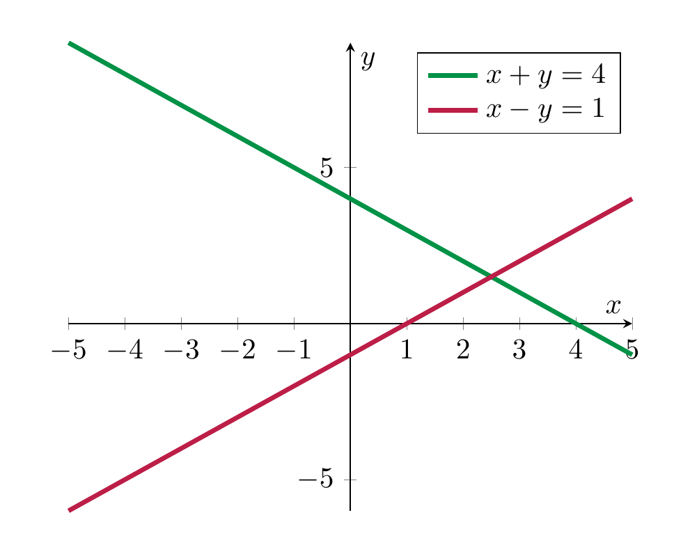
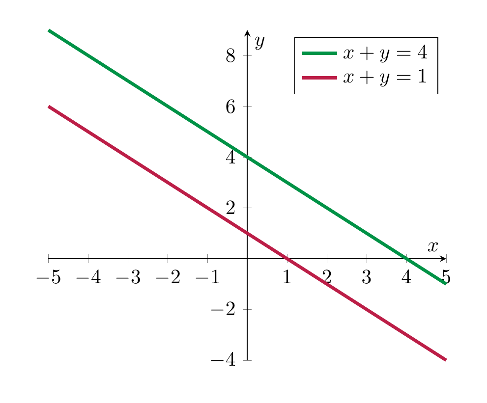
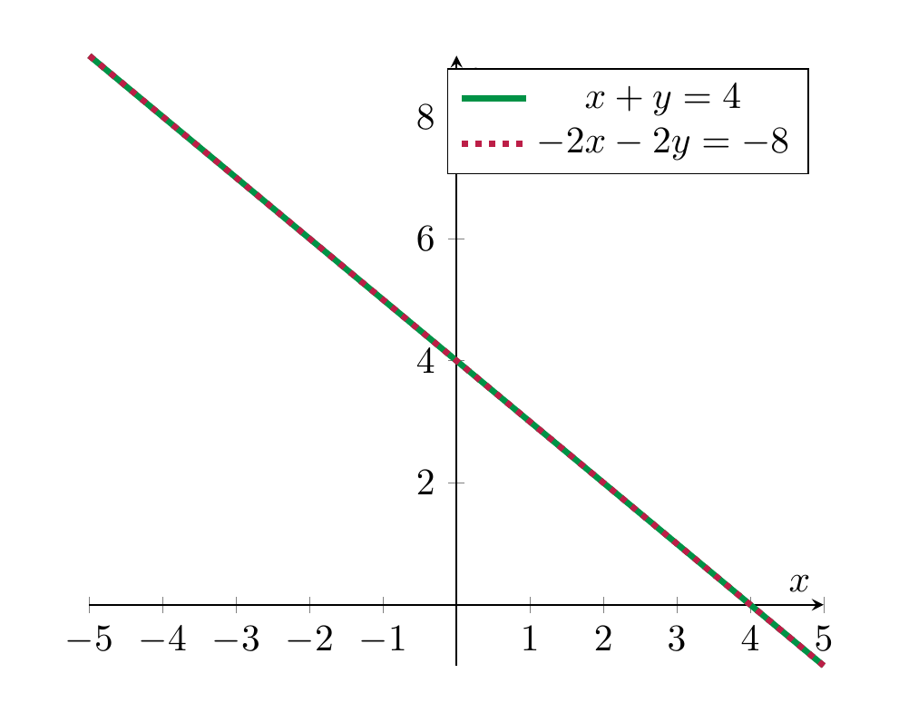

title: Systems: Linear Systems¶
Systems of linear equations¶
Definition 2.7
A system of linear equations is a collection of linear equations (involving the same variables). It is also sometimes called a linear system or even just a system.
The interest in linear systems lies in finding those tuples of numbers satisfying all equations at once (as opposed to just one of them, say). We will start with two equations in two variables.
Example 2.8
The equations
(2.9)
form a system of linear equations (in the variables \(x\) and \(y\)).
We solve this system algebraically by subtracting \(y\) in the first equation, which gives
and substituting this into the second equation, which gives
or
or
or finally
Inserting this back above, gives
Note that again each equation holds (for given values of \(x\) and \(y\)) precisely if the preceding one holds. Thus, the original system has the same solution set as the last two equation (together). This system of equations therefore has a unique solution, namely
To say the same using different symbols: the solution set of the system Equation (2.9) is a set consisting of a single element:
It is very useful to also understand this process geometrically, which we do by plotting the two lines that are the solutions of the individual equations:

The algebraic computation of having precisely one solution is matched by the fact that two non-parallel lines in the plane (which are the solution sets of the individual equations) exact in precisely one point.
The above linear system Equation (2.9) had exactly one solution. This need not always be the case, as the following examples show:
Example 2.10
The system
has no solution. This can be seen algebraically and also geometrically:

The system has no solution, which is paralleled by the fact that two parallel, but distinct lines in the plane do not intersect.
Example 2.11
The system
has infinitely many solutions, namely all pairs of the form
with an arbitrary real number \(x\). Geometrically, this is explained by taking the “intersection” of the same line twice.

In other words, even though there are two equations above, they both have the same solution set. Thus, in some sense one of the equations is redundant, i.e., the solution set of the entire system equals the solution set of either of the equations individually.
Summary 2.12
The solution set of an equation of the form
is a line (unless both \(a\) and \(b\) are zero).
The solution set of a system of equations of the form
can take three forms:\
| number of solutions | geometric explanation |
|---|---|
| exactly one solution | the unique intersection point of two non-parallel lines |
| no solution | two distinct parallel lines don’t intersect |
| infinitely many solutions | a line intersects itself in infinitely many points |
Definition 2.13
A homogeneous linear system is one in which the constant terms in all equations are zero. (I.e., in the notation in below, \(b_1 = \dots = b_n = 0\).)
Remark 2.14
For a homogeneous linear system, there is always at least one solution namely
This solution is called the trivial solution.